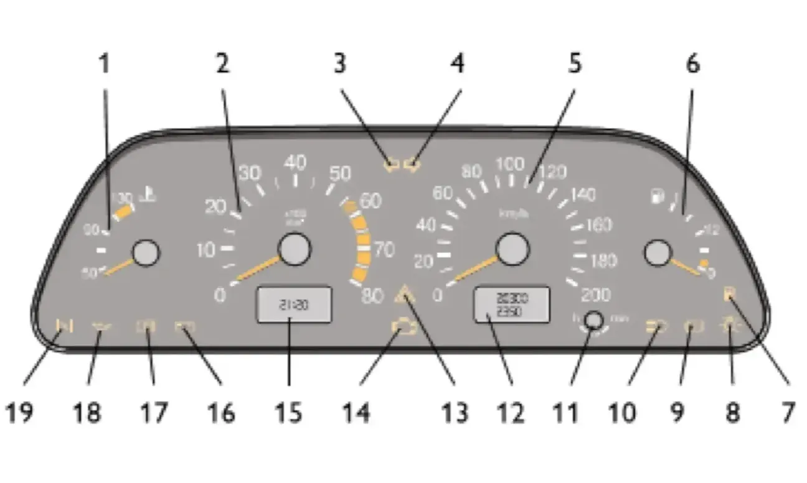

Комбинация приборов
Комбинация приборов показана на рисунке 17. При включении наружного освещения включается подсветка приборов.

1. Указатель температуры охлаждающей жидкости.
Переход стрелки в красную зону шкалы указывает на перегрев охлаждающей жидкости двигателя. В этом случае запрещается дальнейшее движение автомобиля. Автомобиль должен быть доставлен к официальному дилеру для определения и устранения причины перегрева охлаждающей жидкости.
2. Тахометр. Указывает частоту вращения коленчатого вала двигателя.
Красная зона шкалы со штриховкой обозначает режим работы двигателя с повышенной частотой вращения коленчатого вала, сплошная красная зона шкалы — опасный для двигателя скоростной режим, превышать который запрещается.
3. Контрольная лампа включения указателей поворота по левому борту. Загорается зелёным мигающим светом при включении сигнала левого поворота.
4. Контрольная лампа включения указателей поворота по правому борту. Загорается зелёным мигающим светом при включении сигнала правого поворота.
5. Спидометр.
6. Указатель уровня топлива.
7. Контрольная лампа резерва топлива. Загорается оранжевым светом, если в топливном баке осталось от 4 до 6,5 л бензина.
8. Контрольная лампа включения габаритного света. Загорается зелёным светом при включении наружного освещения.
9. Контрольная лампа аварийного состояния рабочей тормозной системы. Загорается красным светом при понижении уровня жидкости в бачке гидропривода тормозов ниже метки «MIN», а также в момент включения стартера для контроля исправности самой лампы.
Запрещается эксплуатация автомобиля при постоянно горящей контрольной лампе аварийного состояния рабочей тормозной системы.
10. Контрольная лампа включения дальнего света фар. Загорается синим светом при включении дальнего света фар.
11. Кнопка сброса показаний счётчика суточного пробега, переключения индикации времени и температуры окружающего воздуха.
12. Индикатор пробега. Верхняя строка индикатора указывает суммарный пробег автомобиля, а нижняя — является суточным счётчиком пройденного пути. Сброс показаний суточного счётчика проводите удержанием кнопки 11 в нажатом положении более 3 секунд на остановленном автомобиле. Обнуление показаний суточного счётчика происходит так же и при снятии клеммы с аккумуляторной батареи.
13. Контрольная лампа включения аварийной сигнализации. Загорается красным мигающим светом при включении аварийной сигнализации.
14. Контрольная лампа «ПРОВЕРЬТЕ ДВИГАТЕЛЬ». Кратковременное загорание лампы при включении зажигания свидетельствует о самотестировании системы. При отсутствии неисправности лампа гаснет после пуска двигателя.
В случае обнаружения какого-либо дефекта в системе, лампа горит постоянно. О том, что необходимо предпринять в случае загорания лампы, изложено в разделе «Эксплуатация автомобиля».
15. Индикатор времени и температуры. Переключение между индикацией времени и индикацией температуры окружающего воздуха осуществляется кратковременным нажатием на кнопку 11.
При включении зажигания при температуре окружающего воздуха выше +2 °С всегда появляется индикация часов. При понижении температуры окружающей среды до +2 °С индикатор в течение 3 секунд высвечивает показания часов, а затем переходит на индикацию температуры, показания которой первые 10 секунд происходит в мигающем режиме.
При повышении температуры наружного воздуха выше +3 °С и повторном её снижении до +2 °С: в случае индикации часов индикатор автоматически переключается на индикацию температуры, показания которой первые 10 секунд высвечиваются в мигающем режиме; в случае индикации температуры её обычный режим прерывается десятисекундным мигающим режимом.
Установка часов и минут производится в режиме индикации времени путём вращения кнопки 11 в сторону знаков «h» — часы и «m» — минуты.
После снятия клеммы с аккумуляторной батареи и последующего восстановления соединения отсчёт времени производится от нулевого значения.
16. Контрольная лампа заряда аккумуляторной батареи. Загорается красным светом при включении зажигания и гаснет после пуска двигателя.
Свечение лампы при работающем двигателе означает нарушение нормальной работы системы электропитания автомобиля и указывает на неисправность системы зарядки аккумулятора, слабое натяжение или обрыв ремня привода генератора или неисправность самого генератора. В этом случае необходимо обратиться к дилеру ЗАО «Джи Эм-АВТОВАЗ».
17. Контрольная лампа включения стояночного тормоза. Загорается красным светом при включении стояночного тормоза.
18. Контрольная лампа недостаточного давления масла. Загорается красным светом при включении зажигания и гаснет после пуска двигателя.
При работающем двигателе горящая постоянным светом контрольная лампа указывает на недостаточное давление в системе смазки двигателя. Дальнейшая эксплуатация автомобиля с горящей контрольной лампой приведёт к выходу двигателя из строя. В этом случае необходимо обратиться к дилеру ЗАО «Джи Эм-АВТОВАЗ».
19. Резерв.